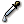
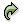
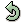

You can either choose MSX1 or MSX2 as your Project Type.
This option affects your Exported data, and - in the near future right now - the ability to change the palette.
MSX1 allows you to have a maximum of 4 sprites per line, where each sprite is of a single color.
So, to compose a drawing of, say, 3 colors, you'll need exactly 3 sprites.
MSX2, on the other hand, allows you to have up to 8 sprites per line, and each of the sprite's line
can have a different color.
In addition, the video chip in MSX2 is able to combine sprites colors with an OR operator, producing
a total number of colors higher than the number of sprites combined.
TinySprite take that into consideration and automatically generates the best combination of colors in
order to minimize the quantity of sprites you need.
Note 1: the color 0 (zero) in MSX2 is not always transparent. In fact, you can change its RGB values and
use it as a regular color. This behavior will be implemented soon in TinySprite.
Note 2: in MSX-BASIC you can change the sprite bitmap mask using SPRITE$(N)=[pattern]. With MSX2 you can also alter the line colors with COLORSPRITE$(N)=[attributes].
These are the tools available for editing the grid:
-
Pencil: sets pixels with the left mouse button, unsets them with the right button.
You can just click and drag the mouse above the grid as you would do in any painting program.
-
Bucket: paints a whole contiguous area of the drawing.
Example: clicking over a green pixel will turn every green pixel in the neighbourhood to the color you have chosen.
- 
Color Picker: samples a color from the drawing, setting it as your current color.
-
Undo: undo your last action, useful when you make mistakes. You can undo multiple times.
- 
Redo: repeats a previously undone action.
 Flip Horizontally: mirrors the drawing horizontally.
Flip Horizontally: mirrors the drawing horizontally.
-
Flip Vertically: mirrors the drawing vertically.
-
Rotate Clockwise: rotates the drawing 90 degrees clockwise.
- 
Rotate Anticlockwise: rotates the drawing 90 degrees anticlockwise.
-
Roll: shifts the drawing in the given direction, wrapping around the grid.
The preview area presents a reduced scale version of what your drawings look like.
Clicking on one of the available previews have the effect of selecting which slot is being edited in the main Grid.
You can use the preview panel to line up 4 slots together. This is often useful when editing "big sprites".
Each of your drawings is stored inside a single slot.
You can create any number of slots to store your drawings, rename them accordingly, and preview them on the preview area.
They can also be deleted, copied, pasted over another slot...
Upon clicking on a slot, your selected preview grid will be linked to it. So whenever you return to that particular preview, the slot will be active again.